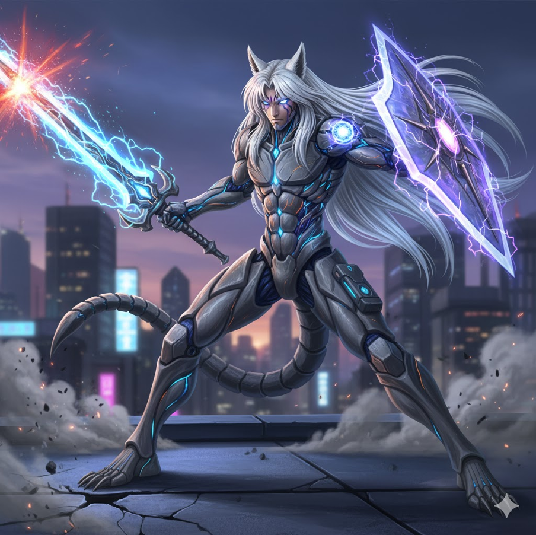

Conceptual rendering: CH-01 "Ares A-2" in defensive posture with plasma blade and magnetic shield active
Project Chimera: Embodied Volition
In the shadow of advancing threats to those we hold most precious, the question becomes not whether we can build a guardian, but whether we can build one incorruptible. The CH-01 "Ares A-2" represents the culmination of bio-cybernetic integration research—a 2-meter tall, 450-kilogram sentinel designed with a singular mandate: the defense and preservation of family.
Unlike autonomous weapons systems that raise ethical concerns about lethal decision-making, or remote-piloted platforms constrained by human reaction time, the Ares A-2 employs a radical solution: the designer's own consciousness serves as the ethical processor. This is not artificial intelligence making life-or-death decisions, but rather the extension of human protective instinct through superhuman capabilities.
The aesthetic draws inspiration from Japanese folklore—specifically the protective yokai archetype embodied in characters like Inuyasha and Sesshomaru. The fusion of organic form with advanced materials creates a presence that is simultaneously familiar and transcendent, a guardian that bridges the warmth of human intention with the cold precision of engineered perfection.
The Immortality Protocol
The biological brain provides unparalleled ethical judgment and protective devotion, but it carries an inherent vulnerability: mortality. The Neural Backup and Restoration Protocol (NBRP) addresses this fundamental limitation through a four-phase approach analogous to aerospace redundancy systems.
During Phase 1, a complete connectome mapping—similar to the Human Connectome Project's neuroimaging techniques—creates a high-fidelity digital representation of every neural connection. Phase 2 implements continuous memory synchronization through the Neural Interface Bridge, uploading new experiences and learned behaviors in real-time, much like how modern cloud systems maintain data integrity.
When biological degradation is detected through biomarker analysis, Phase 3 initiates: a genetically pristine, cloned neural structure is prepared using techniques derived from induced pluripotent stem cell research. Finally, Phase 4 downloads the preserved consciousness into the fresh biological substrate, ensuring the guardian's protective will transcends individual biological lifespans.